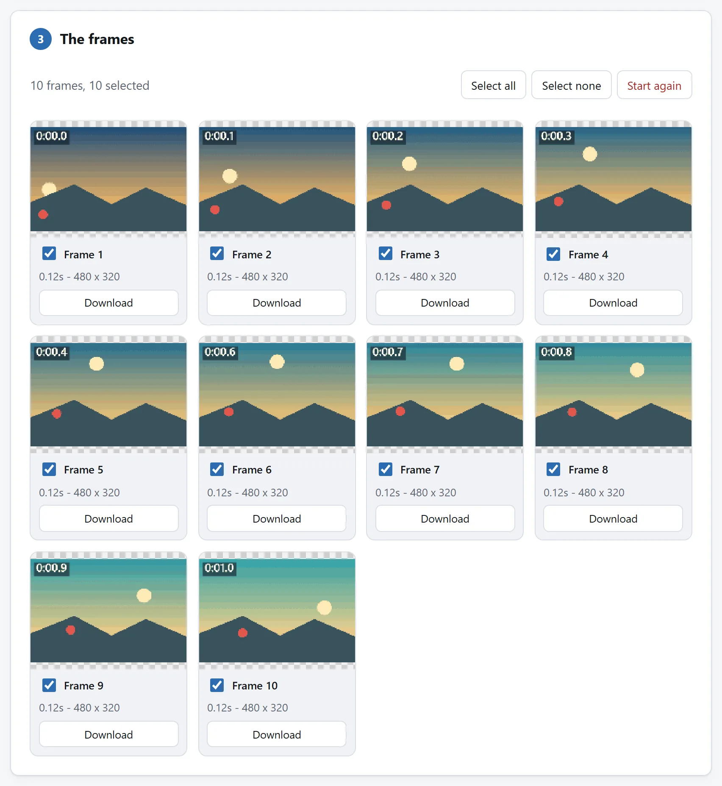
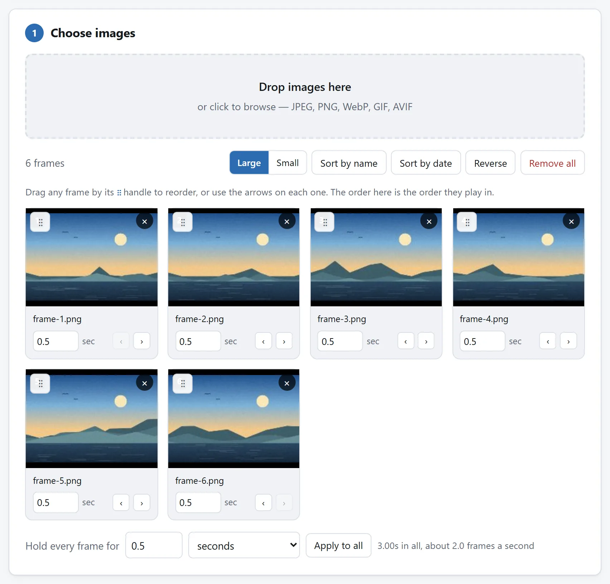

简短的答案
- 拆开。打开 GIF 拆帧工具并放入 GIF。每帧成为独立 PNG，保持屏幕上的样子和透明。ZIP 还包含每帧延迟的时间清单，供重建时使用。
- 编辑文件夹。删除不要的帧，在图片编辑器中修改其他帧，通过重命名调整顺序。PNG 文件夹是一种普遍支持的形式。
- 重新组装。把文件夹放进 GIF 制作工具，根据时间清单手动设置停留时间，选择调色板，再导出。
三步全在你的浏览器里跑。任何时刻都没有任何东西被上传，而这在这里比平时更要紧：人们要修的 GIF，太多是屏幕录像，里面半露着什么敏感的东西。
去掉一闪，或让说明停久一点
录屏 GIF 可能闪过通知、未完成图形或提前打开的菜单。按显示效果导出帧，找到问题 PNG，删除或修图后重组。若要隐藏信息，逐帧检查剩余内容；删掉一次露脸不等于两帧后不会再出现。未编辑来源另存。
操作说明的动作帧快些，完成步骤停久些。参考 frames.txt 在 GIF 制作器里填延时，制作器不会自动导入这份文件。删帧也删掉其停留时间，需把时间加到相邻帧。重组后看完整结尾和循环，确认节奏仍说明白动作。
动手之前，拆分器能告诉你什么
拆分器给每一帧标出停留时间、位置、尺寸和处置规则——动手之前值得先看一眼这块面板，因为它解释了大多数 GIF 的两个意外。
其一：帧并不都是完整的画面。许多 GIF 只存变化了的像素，打补丁一样贴在前一帧上；拆分器让你选每一帧是按呈现的样子还是按存储的样子取出，而编辑时你几乎总要呈现的样子，好让每张 PNG 都能自立。其二：停留时间是逐帧的，不是一个数。落在包袱上的那个停顿，是真实一帧上的真实停留，而把它平安带过往返一趟的，正是那份节奏清单。
要是只做常见的删减，文件夹这一步甚至可以省：每两帧留一帧、每五帧留一帧，或者逐帧勾选去留，这些都在拆分器里——而把帧砍半，是一个 GIF 能得到的最见效的减肥方案。

重组的代价，说实话
一个 GIF 最多装 256 种颜色，在组装时选定。重组会把帧重新量化一遍——一个共享调色板，或者逐帧选最优颜色——在照片类素材上，这第二次量化可能看得出来。在屏幕录像和线条画上——也就是通常的货物——看不出来：它们本来就没用满过 256 色。
生成器的其余几根杠杆，和 GIF 预算指南里的相同：更少的颜色、渐变用 Floyd-Steinberg 抖动，还有循环行为——永远、一次，或者指定次数。
想看看手术成没成功——以及字节到底住在哪里——把成品拖进 GIF 分析器：它把帧对字节画成图，最重的那帧往往是一次本可以裁掉的整幅重绘。
这趟路生成器自己就会提议：导出之后，下载按钮下方的一行会把刚做好的 GIF 直接带到分析器，到那边已经装好。

如果你每周都做这件事
拆开、文件夹、重组：这几步分住在不同页面上，因为每个页面只做一件事，每一个都能独自证明没有任何东西离开你的电脑。但这一切都是开源的：MIT 许可证，每个工具一个文件夹，零依赖的 ES 模块，README 讲清解码器、处置规则和量化器。
如果 GIF 手术是件反复找上门的杂活，就把代码代理指向代码仓库，让它把拆分器的帧表和生成器的编码器折进一个页面，删一帧只要一次点击。这些模块就是写来被读的，把它们带走，正是许可证存在的意义。